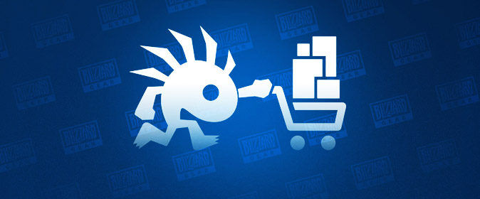

Чтож если вы не захотели играть на пиратских серверах и предпочитаете официальные сервера то как было указыно ваше официально сечас купить World of Warcraft нельзя поэтому вот несколько способов купить подписку и игру
I.Купить в подарок:
Тут всё просто. Вам достаточно иметь друга который находится не в странах СНГ и который может купить игровое время или дополнение спомощью функции "купить в подарок" в официальном магазине Blizzard. Суть в том что друг покупает вам дополнение или подписку в подарок за свой счёт или за деньги которые вы ему отдадите. Однако стоит уточнить что если вы покупаете в других странах то вы будете оплачивать покупку в зарубежной валюте а это значит то что цена возможно будет выше чем в Российском регионе.
Вот примерные цены при покупки из прибалтийских стран (в рублях):- 30 дней игрового времени стоят-1490₽
- 60 дней игрового времени стоят-2900₽
- Дополнение WoW Shadowlands стоит-5000₽
Всё достатачно просто но не у всех есть друзья за границой готовые купить в подарок игру или игровое время поэтому есть ещё несколько способов покупки игры и подписки.
II.Купить в неофициальных магазинах:
Тут тоже всё просто. Никому не секрет что существуют неофициальные сайты по продаже игровых услуг. Одни из них это Funpay или Plati.ru в них вы можете купить дополнение или игровое время но проблема тут в том что вам придётся достатачно много переплатить за эту услугу так например игровое время на 60 дней в официально магазине Blizzard вам обошлось бы в 1300₽ в таких магазинах вам придётся раскашелется и купить 60 дней игры за невероятно большую цену от 2500₽ до 3000₽ а дополнение вам обойдётся вам в 5000₽.
III.Купить за внутриигровую валюту:
Сразу скажу этот способ подходит только для тех у кого уже куплено игровое время.Данный способ заключается в том что вы просто покупаете жетон игрового времени за игровую валюту. Сейчас на Ru серверах он стоит примерно 250к золота.Данную сумму можно накопить за 14 дней фарма по 1-2,5 часу игры в день в зависимости от вашего везения. Если вы не желаете тратить столько времени на игру вы можете купить золото в техже неофициальных магазинах за 1500₽
Цена жетона на разных серверах- На ру-европейских серверах:
от 255.000 до 263.000 золотых. - На US серверах:
от 159.000 до 167.000 золотых. - На Китайских серверах:
от 405.000 до 413.000 золотых. - На Корейский серверах:
от 207.000 до 215.000 золотых. - На Тайваньских серверах:
от 376.000 до 384.000 золотых.